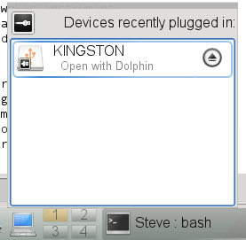
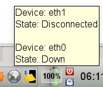
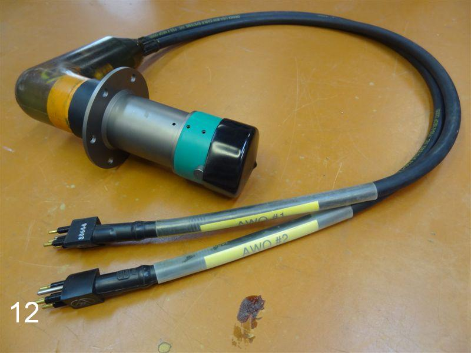
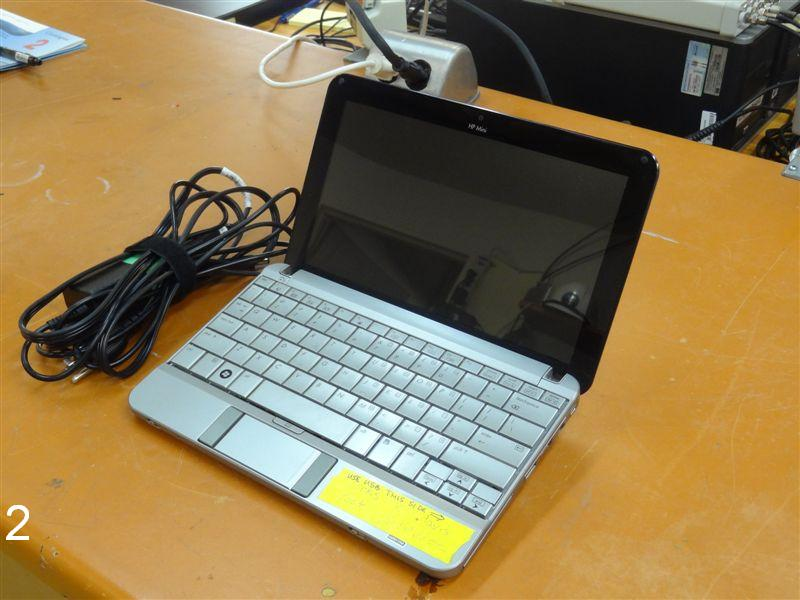
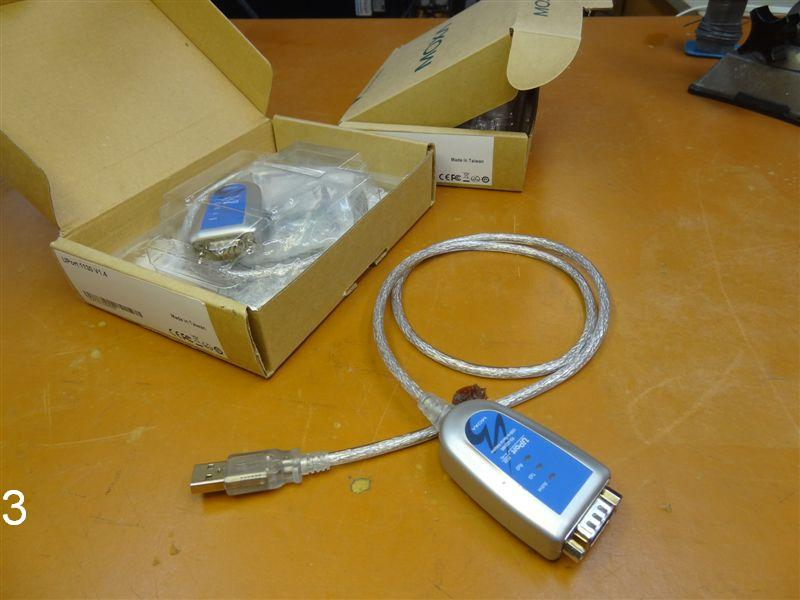

The wiki http://www.corkobservatories.org/pmwiki/index.php
Unfortunately, the wiki site is not very well maintained in the moment.
I do maintain a version controlled software repository that contains all the programs that you need to deal with CORKs and the downloaded data: http://corkobservatory.svn.sourceforge.net/viewvc/corkobservatory/
This repository is used to keep the computers that are used to download data updated and in sync. It also contains all calibration and site information (see CalibrationFiles) and the details of the instrument configurations (see ParameterFiles). If you want to contribute to that information, you need to install subversion (svn) to stay up to date and push new updates to the software repository. Or you can ask me to make the modifications. I also use the repository the maintain some documentation of the software that you can access here: http://corkobservatory.sourceforge.net/
A computer running Linux is the simplest platform to install and run the CORK software on.
[mheesema@sciserv C-tools]$ svn log -r base:head
Make sure laptop clock is synchronized (see Sync to NTP)
Create a working directory (see Setup working directory)
Connect instrument to computer (see Connecting the Instrument)
Turn on communication and power after connection is established make sure power and comms are off before ODI connector is removed from parking position
Run mlterm, making sure to use a reasonable log-file name (see Starting mlterm)
Consider to increase download speed (see Increase download speed)
Download data D, making sure to use a reasonable file name
Get instrument stats F again
PI might suggests real-time monitoring while following next steps
Backup data (*.raw) to USB key (see Backup data)
strips off file system and generate xxxx.bin (there should be no errors)
Does some integrity checking and creates ASCII dump
Discuss with PI
Contact PI and discuss whether to clear memory
Backup *.log files and sent *.log and *.raw files to PI
Make sure the communication and power lines are turned off before the under water mateable connector is disconnected.
Working with the HP-Mini s that are used to download data from CORK s and BPR s requires some basic Linux skills. This section provides some recipes for common tasks.
Linux session with terminal window.
Click on the terminal icon
to open a command-line terminal window. If needed you can create tabs with additional terminals from the File menu.
Before you start to communicate with a CORK or BPR, create a working directory under /home/corks/Cruises or /home/corks/Tests–what ever seems more appropriate. If you are on a cruise you might consider creating subdirectories for individual instruments. In a terminal window change the directory to the working directory and execute cp /home/corks/corkobservatory/CalibrationFiles/\*.txt ./ to copy some calibration files into your working directory (see mlterm calibration files). Now, you’re all set to begin communication with the logger, data download, and post-processing.
If all of this is not clear to you, you might want to read Open a terminal window and Basic Linux Commands first.
After downloading data from an instrument and before clearing the memory, make sure that you make at least one backup copy of the data is on a USB key. To make a backup follow these steps:
Insert USB key (it will be mounted under /media)
Find out the name/directory of the drive (ls /media)
Copy files cp file1.raw [file2.log ...] /media/nameOfUSB (cp -R let’s you copy directories recursively)
Unmount USB key (click computer icon, hover over device–e.g. KINGSTON, click eject symbol)
Now the eject symbol should have disappeared and you can safely remove the device
Boot up the HP-Mini and make sure that wireless networking is enabled (both LEDs on front are blue) if you do not have a cabled connection.
Hover over icon on the bottom tool bar (globe, or wireless signal) and check if eth0 (cable) or eth1 (wireless are connected)
If no connection is up, click on the globe and connect to a network (e.g. TGT if you happen to be on the Thompson)
Todo
Add section about NTP setup
Most modern CORKs and BPR have an RS-422 serial interface. We found that Moxa UPort USB-to-RS422 converters provide the most reliable connections.
Before running mlterm in a command-line terminal, make sure you are in a directory that is appropriately setup (see Setup working directory). If you simply run mlterm, the session will be logged (appended) to a logfile named after the current date. It is advisable to use the -l myLogfile.log command-line option, to choose a descriptive name. On startup, mlterm tries all possible baudrates to connecte to the instrument. If the baudrate is known (115200 for all NEPTUNE instruments) the -b 115200 option provides a quicker initialization. As shown in Linux session with terminal window., the instrument should wake up after a short period of time and after hitting Enter the high-level mlterm menu will be presented.
Start mlterm (see Starting mlterm) and from high-level menu proceed as follows:
Now, your are all set to start the download procedure.
Note, the download baudrate will automatically be set to it’s default if you deploy the instrument by quitting mlterm with Z or after a timeout period of 30 minutes.
After downloading raw data from an instrument (see Simple health check and download) the data has to post-processed.
First, mlbin has to be applied (mlbin filename.raw) to turn the *.raw file into a *.bin file. The *.raw files still contain the filesystem of the flash card and recovery information in case there were errors in the data transmission. mlbin strips off the filesystem and tries to fix any errors that might have occured. The *.bin file only contains data records in binary counts.
mldat9 (mldat9 filename.bin) is the standart utility to calibrate *.bin data and write the results into a *.dat ASCII file. In order to use mldat9 you have to cd into the directory with the *.bin file and make sure there is also a current set of calibration files in the directory (see Setup working directory). While running mldat9 you will be ask whether the temperatures are measured using a platinum sensor or a thermistor. Platinum sensors are mostly used in CORKs and BPRs installed past 2009 and have two-digit serial numbers, while themistors have one digit serial numbers. The serial numbers are shown in the sites.txt calibratrion file (see mlterm calibration files) and should be noted in the respective *.par file under ~/corkobservatory/ParameterFiles. Furthermore, you are asked whether the Paroscientific gauge measures pressure and temperature or pressure only. If you do not know the answer you can lookup the gauge serial numbers that are mentionend in sites.txt in parosci.txt and check whether U0, Y1, Y2 are zero (pressure only) or non zeros (pressure and temperature). Then you have to select a data format (typically `` 4. Parosci temperature compensated pressure``) and a site description which is a line from the site.txt calibration file. The site description has the following format:
| number: | description_rtcID | deploymentMonth | temperatureSerial | parosciSerial | parosciSerial | ... |
| 3: | 1027C_89 | Jul10 | 98 | 120238 | 120239 | ... |
mldat9 automatically removes spikes from the paros pressure and temperature channels that get sometimes generated by the measurement system and is convinient to use, but it has certain limitations:
To cope with these problems two Python programs were developed that can be used instead of mldat9 (see Install dependencies for Python scripts). The first script dumpBin.py can be used fix *.bin files by eliminating partial records, remove spikes, find problems, and dump the binary counts into an ASCII format that is human readable and can be calibrated using a calibrateLogfile.py.
A common workflow to process filename.bin using these scripts would be:
Run dumpBin.py --help and calibrateLogfile.py --help to study all available the commandline options.
There are three different calibration files:
Data base that associates deployment locations and times, logger IDs, and sensor IDs. This information is used for calibration routines.
Note, mldat and mlterm only support only up to 30 lines in sites.txt.
Todo
Changed mldat (wrt2dat.c – DEFINE MAXSITES) to support sites.txt files with more than 30 lines. Add same functionality to mldat (formatdata.c) requires CORK simulator for testing...
CORK pressure cases usually have an 6 pie AWQ bulkhead connector, that connects to an 7-pin ODI or SEACON underwater mateable connector. BPR pressure cases usually have an 2 piece AWQ bulkhead connector, that connects to a 7-pin ODI connector.
ODI to two pie AWQ cable
There are four HP-Minis setup to do CORK and BPR downloads around the world. It is also possible to compile the communication software for Mac and there is an image for VirtualBox that makes it possible to run the software on a Linux virtual machine under windows.
The Moxa UPort USB-2-RS422 to adapter provides superior download speeds over other brands. Unfortunately, the driver only supports older versions of Linux. UPDATE: There is a new driver released in summer 2012. Also, Nic Scott mentioned wrapping Windows drivers under Linux
A computer running Linux is the simplest platform to install and run the CORK software on. It is also known to run on Mac computers and most data data processing can be done on Windows machines, but mlterm the programm used to communicate with CORKs and download the data does not work under windows and the necessary development environment to compile various C-programs might be challenging to setup on Mac.
CORK software, calibration and parameter files are maintainded at the CORK Observatory Software Repository.
It is best to have svn installed to check out the code. Check if svn is installed by running svn --help. If there is not help displayed you have to install svn e.g. by running sodu yum install subversion.
Now, go into the home directory of the cork user (cd ~) and run
svn co https://svn.code.sf.net/p/corkobservatory/code/ corkobservatory
Note
SourceForge changed their naming scheme. Do not use the following anymore: svn co https://corkobservatory.svn.sourceforge.net/svnroot/corkobservatory corkobservatory
If you are stuck at revision 65 after update Updated to revision 65.
svn info URL: https://corkobservatory.svn.sourceforge.net/svnroot/corkobservatory
svn switch --relocate https://corkobservatory.svn.sourceforge.net/svnroot/corkobservatory https://svn.code.sf.net/p/corkobservatory/code/
After update revision should be greater than Revision: 73
This will create a corkobservatory directory that contains program source codes, calibration information, etc. To update these files to the latest version you can cd into the corkobservatory directory and run svn update at any time when you have an internet connection.
mlterm, mlbin and mldat9 are the core utilities (programmed in C) to setup CORKs and download the data, strip unneccessary filesystem information from the downloaded *.raw files, and to calibrate the data contained in the *.bin files, respectively. In some special cases, when there are problems with data consistency or with special instrument setups you need to use some Python scripts, that will be discussed later, instead of mldat9.
Since the core utilities are supplied as C source code, you need to have a C-compiler and basic development tools installed. cd into the mlterm, mlbin, and mldat directories under ~/corkobservatory/C-tools and run
in each directory to compile and install the programs individually.
NOTE: there is also a variant of mlterm mlterm_vpn that gets automatically installed with mlterm that is for use with instruments connected over connections with high latency (e.g. TCP/IP, VPN,...).
Many USB/RS-422 adapters run under Linux out of the box, but the Moxa UPort-1130, which we found is the most reliable adapter, requires the compilation/installation of a seperate driver. We had problems in the past, because the driver was not compatible with current Linux distributions, but fortunately, Moxa did update the driver in summer 2012.
So if you want to use a Moxa adapter make sure to download and install the latest diver either from their website or use the copy that is stored in the software repository (~/corkobservatory/ComputerSetup/drivers/MoxaUPort). Follow the instructions in the readme.txt file under “Module driver configuration”.
If the driver install succeeded running mlterm with the Moxa UPort plugged into a USB port should start an mlterm session with mlterm trying to connect to the instrument. If the adapter is not recognized by the OS mlterm will fail with the following message:
/dev/ttyUSB0: No such file or directory
The Python scripts need
So first check if Python is already installed python --version and install it with e.g. sudo yum install python if not. Now you can try to install the numpy and matplotlib packages of your distribution e.g.:
or install easy_install e.g. sudo yum install python-setuptools and then run:
Now, cd into the ~/corkobservatory/ComputerSetup/scripts directory (see Check out the CORK software repository for how to set it up) and run ./createPythonToolsSymLinks.bash to add symbolic links to the python scripts dumpBin.py and calibrateLogfile.py to your path. If everything worked out, running dumpBin.py --help and calibrateLogfile.py --help will display the respective help information.
Usage: mlterm [OPTION] ... [DEVICE]
Options:
-b BAUDRATE baudrate for terminal (should match instrument) deflt: 19200
-C Clear memory
-d FILENAME debug output file
-D FILENAME Download data to raw output file
-p FILENAME parameter error output file (companion to -W)
-F Full status report
-G FILENAME Get eerom and output to parameter file
-h display this help and exit
-l FILENAME log output file
-M FILENAME Metadata (and naked eerom) to output file
-n HOST[:PORT] host (and optional network port; default is 4001) for
networked serial device
-W FILENAME Write parameter input file to instrument eerom
-I Initial status report
-P low level (Pass-thru) mlterm for advanced users
-R Recover communications
-s SITENAME name as in sites.txt to format data (companion to -U)
-Y sYnchronize instrument clock time
-U COUNT display data in engineering Units for COUNT samples
enter '' to display til ESC
-v verbose output to screen and log file
DEVICE is the serial port device file; default is /dev/ttyUSB0
Usage: dumpBin.py [options] bin_files
This script processes ML-CORK bin files
Options:
-h, --help show this help message and exit
-I RTC_ID, --RTC_ID=RTC_ID
Force RTC ID #. Supply id as hex integer (e.g. 0x8C).
Default: 5th byte in file
-c NCHANNELS, --n_channels=NCHANNELS
Force number of paro channels
-n, --no_stats Skip stats--they can take some time and generate some
clutter
-s, --spaces
-a, --print_all
-p, --plot_data Plots the data. May not work if you do not have the
right libaries installed
-i, --info_only Just output statistics (and plot, optionally) and not
the actual data
-o, --old_ML-CORK Assume data is from an old ML-CORK where the readings
do not end with 0x00
-t, --timestamps Print calibrated timestamps on every line emulating NC
logfiles, at the same time.
-f TIMESTAMPFMT, --timestampFMT=TIMESTAMPFMT
Modify timestamp format defaults is '%Y%m%d %H:%M:%S'.
Use -f '%Y%m%dT%H%M%S.000Z' to emulate NEPTUNE Canada
log files.
-d, --despike Remove detected spikes by inserting linear
interpolation.
-b BINARYFILE, --binary_file=BINARYFILE
Safe a binary file skipping problematic records
Examples:
Usage: calibrateLogfile.py [options] logfile.log
This script find raw data in mlterm logfiles and calibrates it
Options:
-h, --help show this help message and exit
-c CALIBRATION, --calibration=CALIBRATION
Name of calibration defined in calibrateData.py
(required)
-s, --skip_length_check
Skip the check whether the number of calibrated value
equals the number of binary input
fields. Use this e.g. for 1362B where one existing
channel contains garbage and is not
used...
Todo
Add section about NTP setup
(The original entry is located in C:\Users\Martin\Documents\Instruments\CORKs\corkobservatory\Documentation\src\FieldGuide.rst, line 156.)
Todo
Changed mldat (wrt2dat.c – DEFINE MAXSITES) to support sites.txt files with more than 30 lines. Add same functionality to mldat (formatdata.c) requires CORK simulator for testing...
(The original entry is located in C:\Users\Martin\Documents\Instruments\CORKs\corkobservatory\Documentation\src\FieldGuide.rst, line 281.)
Basic functions needed to calibrate ML-CORK / BPR data.
More text to describe what’s going on
Calibrate temperatures from Paroscientifc Type-II gauges.
Calibrate temperatures from platinum chip sensors.
The conversion from A/D counts to temperatures in degC is a simple linear relation ship.
Calibrate temperatures from thermistor.
Calibration for the NC 1026B CORK
Calibration for the setup (SR-2B with new gauges) deployed external to CORK in 1027C in Summer 2011, attached with umbilical
Calibration for the 857D Middle Valley piggyback instrument
Calibration for the 858G Middle Valley replacement reCORKed in May 2013. Output: T_Pt, P_S1, P_Sf, T_S1, T_Sf
Calibration for NanTroSEIZE C02 CORK
Calibration for the 2012 JFast setup
Calibration for the U1362A (SR2A) setup as it was in stalled on IODP Exp 327 in Jul 2010
Calibration for the U1362B (initially 1027C) setup as it was in stalled on IODP Exp 327 in Jul 2010. The Screen #3 gauge was just unplugged => crosstalk garbage.
Calibration for IODP U1364A data.
Here are the results of an example calibration:
>>> calibrate_U1364A(Raw=[5590666, 717083323, 2190506663, 2166733706, 2127403171, 2207142752, 2128115585])
[23.626078129440003, 22.276150361949441, 11.103497907947677, 10.510306334848947, 522.67979987438071, -517.29555399981541, 11.071455420816344]
Read coeff from parosci.txt file.
These coeffs are used later on
Read information from sites.txt file.